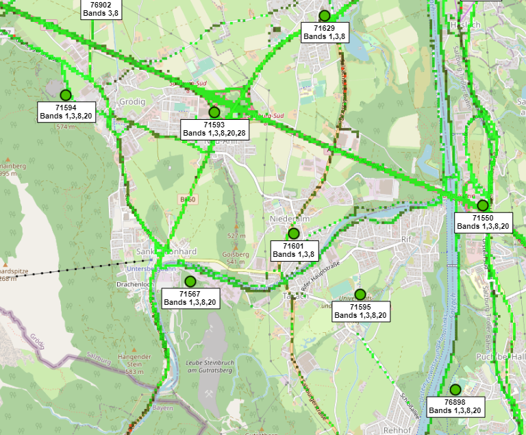

Hallo zusammen!
Seit einigen Monaten geht mein Internet von Magenta nicht mehr als 10 MBit/s Download, Ping 40, obwohl im Vertrag Geschwindigkeit bis 125MBit/s steht!! Ich kann keine Videospiele spielen, das Netflix funktioniert nur in schlechter Qualität.... Ich habe eine externe SMA-Antenne gekauft, zwei andere verschiedene Modems, eines davon ist ziemlich teuer und bei sehr gutem Signalempfang ist die Geschwindigkeit gleich unabhängig vom Modem, Signal! das lässt mich glauben, dass Magenta mich betrügt, ich habe noch 4 Monate von diesem Vertrag, ich habe einige E-Mails an den Magenta-Support gesendet, aber obwohl ich angegeben habe, dass ich nicht gut Deutsch kann und eine Antwort per E-Mail bevorzuge, was ich tun könnte , für jedes Mal, wenn sie mir eine E-Mail auf Deutsch mit einer Telefonnummer geschickt haben, um anzurufen, um zu sagen, welches Problem ich habe, Hilfe 0, existiert nicht! Kann mir jemand mit Ratschlägen helfen? Modemeinstellungen? oder wo kann ich den schlechten service von magenta reklamieren? bitte
LG.
Bearbeitet von Adrianr
Hey
@Adrianr
Ein höherer Upload als Download würde auf eine Überlastung des Mobilfunknetz an deinem Standort hindeuten. Wobei zumindest in diesem Speedtest trotzdem nicht die maximal 25Mbit/s Upload des Tarifes erreicht werden. Hast du dauerhaft so geringe Datenraten, oder nur am Abend?
Welche Modems hast du denn?
Um dir Tipps geben zu können wäre es gut die Modellbezeichnungen zu wissen.
LG NTM
PS: Solltest du lieber auf Englisch schreiben wäre dies auch möglich.
Hi NTM,
Thanks a lot for answer!
usually this is the speed I get, for example now I only have 5 Mbit / s download and 15-20 Mbit Upload. as modem I have a huawei B535-232(reseted over 99999 times, updated, re--re-reconfigured,moved all over the house, balcony = nothing changed) but I bought another (which I use now)TP-Link Archer MR400 modem, the signal processing is visible better but ... there isn't much speed. you're right during peak hours, late at night works better, reaches up to 20Mbit / s, then it works ok, I have no lag in games .. the netflix of the wife goes simultaneously, everything is normal, but during the day very rarely.
I tried many modem settings, and a small SMA antenna, but it doesn't work! That's all I get from magenta.
I live on the outskirts of Salzburg, in Niederalm 5081. If you have any advice for me ... I'm grateful for your time here.
Best Regards,
Radu
Bearbeitet von Adrianr
Hi
@Adrianr
Interesting to hear that the TP-Link MR400 is better in your case since the Huawei B535 has a better Modem-Chip build in.
I would presume that the closest cell site to you is site 71601?

click on the image to enlarge, source cellmapper
If that is the case, please try the following:
As you can see the picture above cell site 71601 broadcasts on bands 1, 3 and 8.
The problem is these routers aren't too smart and they prefer to connect to the band(s) with the best reception.
For Huawei routers such as the B535 there exists an app called "LTE Manager" (available for
iPhone/iPad
and
Android
).
With this app you can limit which bands the router can use.
The Huawei B535 can connect to two bands at the same time. The band combination which has the most capacity in this case would be bands 1 & 3.
So please put your sim into the B535, turn it on, connect your phone or tablet and then open the aforementioned app.
When you use the app for the first time you need add new profile. For the "Configuration Name" you can enter anything you want (e.g. the name of the router), for the "IP" enter the default ip address "192.168.8.1", for the "Username" enter the default username "admin", and for the "Password" enter eighter the default username which is printed on the label at the back of the device or if you have changed the password with which you login to the admin panel (192.168.8.1) enter the password that you have configured.
After you have signed in with the profile click on the band configuration option at the bottom of the screen and only leaf the band 1 and band 3 options enabled. When you hit apply it will take a couple of seconds until the router reconnects to the network and for the app to update the data.
Also, while you are in this app could you post the reception parameters (RSRP, RSRQ, SINR and RSSI)?
Furthermore, could you post the CQI values?
You can find these when you login to admin panel of the router 192.168.8.1 , click on "Advanced" tab on the top of the page, click on "System" -> "Device Information" on the left of the page, and locate the CQI values in the device information list.
Lastly could you specify which SMA Antenna you have purchased?
Best Regards,
NTM
Holla NTN,
Thanks for the reply. I've been busy with work. I'm sorry to answer late.
Following complaints to Magenta, I received a message telling me that they had changed the antenna in my area, since that day the internet has a better response time and the speed is significantly higher. I haven't tried to change the bands yet, but if I have to, I'll do this, I really didn't know I could change the bands. my tplink modem can also change the bands with a new firmware. I hope there is no need, at the moment everything is in order. I wish you all the best and thank you very much for your help. it mattered a lot to me at that moment when I was not getting an answer from anywhere.
Best Regards,
AdrianR.
Hi
@Adrianr
Glad to hear that your problem is solved.
Let's hope it stays that way.
Best Regards,
NTM
{kind=link}
{kind=link}